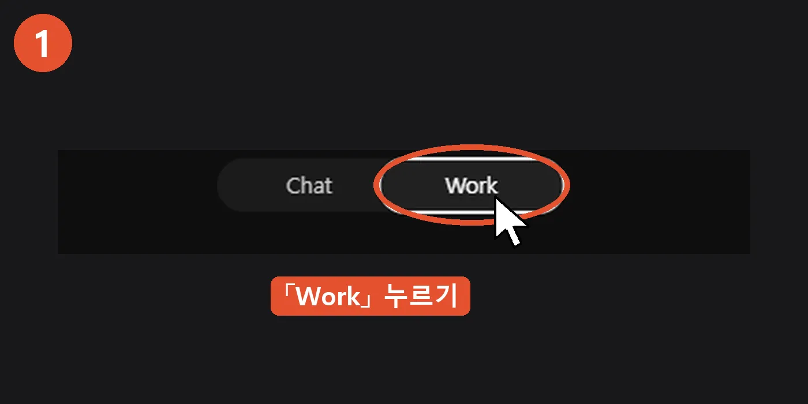
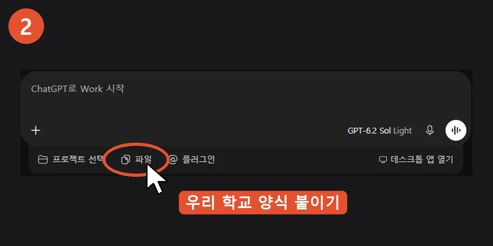
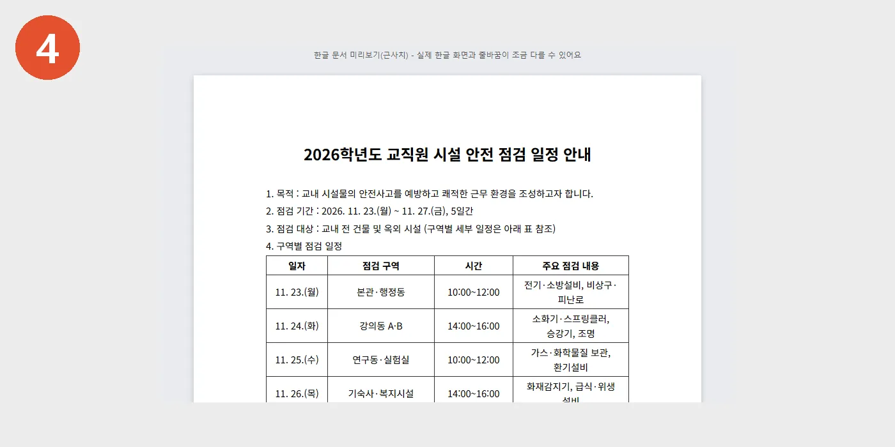

AI에게 무기를 주면
오늘 연수 자료 · 이어서 해 보기
슬라이드는 약 10MB · 와이파이에서 한 번 열면 다음부터 인터넷 없이
시작 가이드
집에서 · 학교에서 오늘처럼 다시 해 보기
2026년 11월 기준 · 메뉴 이름은 앱·요금제마다 달라요
ChatGPT로 시작하기 오늘 연수 방법
- 컴퓨터용 ChatGPT 앱 설치 · 로그인휴대폰·웹 말고 컴퓨터용 앱으로 해요.
- 위쪽 「Chat | Work」에서 「Work」 누르기Work = AI가 파일을 직접 만들어 주는 작업 모드

그림 1 · 「Work」 누르기 - 입력창 아래에서 모델(AI) 고르기모르면 기본값 그대로.
- 한 줄로 부탁 + 「파일」로 양식 붙이기평소 말하듯 한 줄이면 돼요.

그림 2 · 「파일」로 양식 붙이기 
그림 3 · 한 줄 부탁 쓰고 보내기 - 나온 파일 열어 확인 · 「여기 고쳐 줘」마음에 안 들면 한마디 더.

그림 4 · 나온 한글 파일 확인 (가상 내용)
요금 무료로도 들어가 볼 수 있어요. 많이 쓰려면 유료예요. 공식 안내 기준(2026년 11월): 컴퓨터용 앱의 Work는 모든 요금제, 웹·휴대폰의 Work는 유료 요금제.
Claude로 시작하기
- 컴퓨터용 Claude 앱 설치 · 로그인
- 입력창 아래에서 모델 고르기모르면 기본값 그대로.
- 파일을 직접 만드는 작업 모드(Cowork)는 유료 요금제부터무료라면 일반 채팅으로 먼저.
메뉴 이름은 앱·요금제마다 달라요. 안 보이면 비슷한 이름을 찾아보세요.
부탁 예시
「부탁 글 복사」 → 입력창에 붙여넣기. 내 말로 바꿔도 돼요.
다음 주 시설 안전 점검 교직원 안내문 한글 파일로 만들어 줘. 일정은 표로, A4 한 장.
학부모 총회 10분 발표 PPT 5장. 차분하고 믿음직하게, 장마다 그림 하나, 글은 짧게.
중1 과학 '빛과 그림자' 복습 퀴즈쇼 게임 만들어 줘. TV에 띄워서 4모둠 대항, 문제 8개, 20초 타이머, 정답이면 축하 효과, 마지막에 순위 시상대. 인터넷 없이 열리는 파일 하나로.
TV에 띄우는 수업 도우미 만들어 줘. 발표 순서 뽑기(1~28번), 4모둠 나누기, 1 · 3 · 5분 타이머를 탭으로. 이름 없이 번호만.
부탁 4개 더 보기
12월 5일 과학관 체험학습 안내 웹페이지 만들어 줘. 휴대폰에서 보기 좋게, 일정 타임라인, 준비물 체크리스트, 간단한 지도, 비 올 때 안내. 학생 이름 · 연락처는 넣지 마.
이 엑셀로 반별 평균 비교 보고서 만들어 줘. 학생 이름은 빼고.
우리 학교 가을 축제 30초 홍보 화면 만들어 줘. 큰 글자가 날아들고, 단풍잎이 떨어지고, 행사 카드 3개가 차례로 나오게. 마지막 3초는 날짜와 장소.
다음 수업 주제 '광합성'을 소개하는 10초 오프닝 화면 만들어 줘. 글자가 한 자씩 떨어지고, 핵심 단어만 색이 바뀌게.
한 번에 안 나오면 한마디 더: 「글자 더 크게」 · 「우리 학교 색(파랑)으로」 · 「여기 고쳐 줘」. 같은 부탁도 결과는 조금씩 달라요.
잘 쓰는 요령 · 노안중 레시피
- 양식 파일 한 장우리 학교 양식을 「파일」로 같이 붙이기
- 잘된 예시 하나마음에 들었던 지난 문서를 같이 주기
- 규칙 한 줄「학생 이름 · 연락처는 넣지 마」
- 물어볼 땐 채팅, 맡길 땐 Work파일을 만들 땐 작업 모드로
⚠ 꼭 지켜 주세요
- 개인정보 넣지 않기 학생 이름 · 연락처 · 성적은 지우고
- 남의 사진 · 음악 · 캐릭터 쓰지 않기
- 사실 · 숫자 확인 AI가 만든 건 초안 · 마지막 책임은 우리에게
아이모두와 무엇이 다른가요?
2026년 11월 기준 · 자주 바뀌어요
| 살펴볼 점 | 아이모두 | ChatGPT · Claude |
|---|---|---|
| 누가 만들고 운영하나 | 교육청의 AI 교수학습 플랫폼 (ai.jne.kr) | AI 회사가 만든 앱 · 내가 직접 설치 |
| 비용 | 학교에서 받은 계정으로 써요 · 미리캔버스는 아이모두를 거쳐 들어가면 교육용 Pro | 무료로 들어가 볼 수 있어요 · 많이 쓰려면 유료 |
| 계정 | 학교에서 받은 아이모두 계정 · 처음 한 번 간편인증·공동인증서 둘 다 등록 | 내 계정으로 컴퓨터용 앱에 로그인 |
| 학생과 함께 써도 되나 | 학생 등록 가능 · 보호자 동의서(PDF)를 붙여야 등록돼요 · 구글 클래스룸 연결 | 이 가이드는 선생님 업무용이에요 (학생과 쓰기는 다루지 않아요) |
| 개인정보 | 개인정보 든 문서는 올리지 않아요 · 이름·연락처·성적은 지우고 | 넣지 않아요 · 부탁에 「학생 이름 · 연락처는 넣지 마」 한 줄 |
| 잘하는 일 | 로그인 한 번으로 교육청 도구 46개 · JneGPT(가정통신문·회의록 글) · Gemini·Notebook(긴 공문 정리) · 미리캔버스 · 구글 클래스룸 | 양식을 붙여 한 줄로 부탁 → 파일로 받기 · 「여기 고쳐 줘」로 다듬기 |
| 파일을 직접 만들어 주나 (작업 모드) | 오늘 같은 작업 모드(파일 직접 만들기)는 아이모두에서는 안 돼요. 나온 글은 초안 → 내가 문서에 옮겨요 | 돼요 · ChatGPT Work(컴퓨터용 앱은 모든 요금제) · Claude Cowork(유료 요금제부터) |
| 언제 쓰면 좋나 | 학생과 함께 · 학교 안에서 · 교육청 도구를 열 때 | 내 업무 파일(안내문·발표자료 등)을 맡길 때 |
학생과 함께 · 학교 안에서는 아이모두, 내 업무 파일을 맡길 땐 ChatGPT·Claude의 작업 모드 — 단, 개인정보는 어디에도 넣지 않아요
아이모두 칸은 이 사이트의 아이모두 완전 정복과 카드 08b(학생과 쓰기 전에)에 적힌 내용만 옮겼어요.
하네스란?
하네스 = AI에게 도구와 레시피를 주는 것
그냥 시키지 말고, 도구와 길을 같이
유래 · 김치볶음밥 이야기 펼치기
- 유래
- 말에 채우는 마구(하네스) → 힘센 말의 힘을 원하는 방향으로

김치볶음밥 이야기
- 그냥 AI
- 밥만 따로
- 하네스 AI
- 셰프 레시피 + 도구
- 결과
- 한 번에 완성
막혔을 때
궁금한 줄을 눌러 펼쳐요.
「Work」가 안 보여요
컴퓨터용 ChatGPT 앱인지 확인해요. 웹·휴대폰의 Work는 유료 요금제에서만 돼요(2026년 11월 공식 안내 기준). 메뉴 이름은 앱·요금제마다 달라요.
파일 대신 글만 나와요
Work(작업 모드)에서 부탁했는지 확인해요. 「한글 파일로」 「PPT로」처럼 파일 종류를 말해 주세요.
결과가 마음에 안 들어요
한마디 더: 「글자 더 크게」 · 「우리 학교 색(파랑)으로」 · 「여기 고쳐 줘」. 우리 학교 양식을 「파일」로 붙이면 모양이 맞아요.
아이모두 로그인이 막혀요
간편인증·공동인증서를 둘 다 등록했는지 확인해요. 아이모두 완전 정복 · 막혔을 때
그래도 안 돼요
막힌 화면을 캡처해 학교 정보 담당 선생님께 보여 주세요. 학생 이름이 보이면 가리고 보내요.
선택 자료
(선택·시험 중) 학교용 하네스
AI에게 선생님 업무용 도구·레시피를 챙겨 주는 묶음. 아직 시험 중이에요.
https://github.com/zln02/teacher-studio 의 INSTALL.md를 읽고 그대로 설치해 줘. 나는 선생님이고 코딩은 몰라.